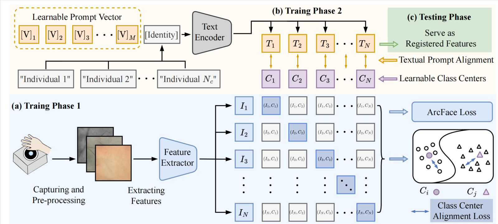
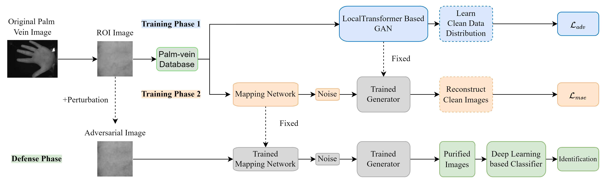

Song Ruan 阮松
Email: rsmung@cqu.edu.cn
I am currently pursuing the Ph.D. degree with the College of Computer Science, Chongqing University, China. My main research interests include Palmprint Recognition, Palm-vein Recognition, with particular interests in Transfer Learning, Defense against Adversarial Attacks, and Biometric Template Protection.
Education
[2024.11 - 2025.11] Visiting Ph.D. Student, The University of Western Australia (UWA)
Perth, Australia
[2022.09 - Expected 2026.06] Ph.D. Student, Chongqing University (CQU)
Chongqing, China
[2020.09 - 2022.09] Master Student, Chongqing University (CQU)
Chongqing, China
[2016.09 – 2020.06] B.Eng. Degree in Automation, Wuhan University of Technology (WHUT)
Hubei, China
Publications
* indicates supervisor, † indicates corresponding authorship
 |
PromptPalm: Textual Prompt Template Substitution for Privacy-Preserving Palmprint Recognition Song Ruan, Yantao Li*†, Huafeng Qin†. IEEE International Conference on Multimedia and Expo (ICME), 2026 |
 |
LSFM: Light Style and Feature Matching for Efficient Cross-Domain Palmprint Recognition Song Ruan, Yantao Li*†, Huafeng Qin†. IEEE Transactions on Information Forensics and Security (TIFS), Oct 2024 [Paper] |
 |
Transformer based Defense GAN Against Palm-vein Adversarial Attacks Yantao Li*, Song Ruan, Huafeng Qin†, Shaojiang Deng, Mounim A. El-Yacoubi. IEEE Transactions on Information Forensics and Security (TIFS), Jan 2023 [Paper] |
Awards and Honors
- [2024.01] Top 10 Outstanding Teaching Assistant of Chongqing University
Reviewer
- IEEE IOTJ, IEEE TIFS, AAAI2026, ICME2026